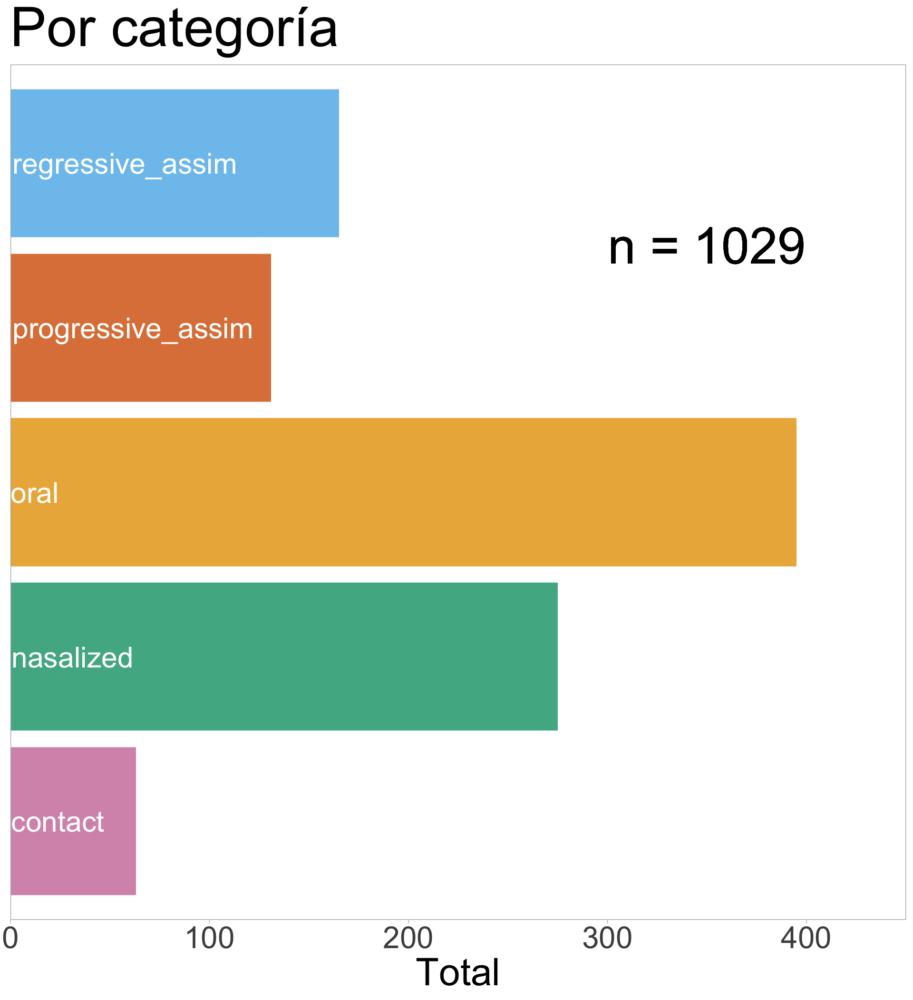

/h/ vs. /h̃/: Estudiando una oposición fonológica ‘imposible’ del euskera desde la fonología de laboratorio
08-03-2024
Fricativas glotales

¿Y una fricativa glotal nasalizada /h̃/?

Euskera de Zuberoa

¡Escuchémoslas!
Oral

Nasalizada

Cronología

500-800 CE
Lenición de /n/ intervocálica
/VnV/ > /Vh̃V/
1000-1300 CE
Pérdida de aspiradas
en sílabas postónicas
en variedades orientales
/hV.’hV.hV/ > /hV.hV.V/
Cronología
1600-1900 CE
Pérdida de nasalidad en aspiradas
en casi todas las variedades
/Vh̃V/ > /VhV/
HOY
Nasalización de aspiradas
preservada solo en el este
ehi ‘dedo’ vs. eh̃i ‘fácil’
SpeechRecorder: Elicitación


Nasalance

Lámina de madera




Grabaciones


Nasalance
→
→
\[ Amplitud \]
→
→
\[ A_n \]
\[ A_o \]
↓
↓
\[ \frac{A_n}{A_n + A_o} \times 100 \]
Modelo jerárquico generalizado bayesiano con brms

Variable dependiente: nasalance
Predictores poblacionales: categoría de la aspirada
Familia: Beta
Predictores de grupo: ajuste de intercepto y pendiente correlacionado por hablante y palabra
Priors poco informativos
Distribuciones posteriores

Distribución de contraste entre las posteriores de nasalizadas y orales


El ACPF descompone la forma de las curvas
- El análisis de componentes principales funcional resume numéricamente la forma principal de variación en datos funcionales (en este caso, sobre el eje temporal)
- En el ACPF, la función de t aproxima la media de t más el producto de cada valor y su CP
- Cada CP captura más variación que el siguiente
\(f(t) \approx \mu(t) + s_1 \times PC_1(t) + s_2 \times PC_2(t) + ...\)

El ACPF permite modelar y reconstruir la forma aproximada de la curva
- Podemos recrear la forma aproximada de la curva se sus PCs y su respectivo valor a la media
\(f(t) \approx \mu(t) + s_1 \times PC_1(t) + s_2 \times PC_2(t) + ...\)

Para este análisis solo hablantes distinguidores

Antes de registrar el tiempo

Después de registrar el tiempo

Distribuciones posteriores

Distribución de contraste entre los valores de CP1 posteriores de nasalizadas y orales

De los valores estimados del CP1 de vuelta a nuestras curvas de nasalidad